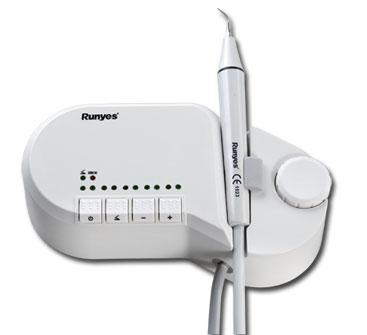

Odontologia General 100%
Todos los tipos de consultas
-Consulta de control: el paciente llega al consultorio con la boca sana para
un chequeo de rutina.
-Primera consulta:el paciente llega por primera vez al nuestro consultorio,
se realisa el odontograma, se habre su historia clinica,se hace el diagnostico y se
acuerda el plan de tratamiento.
-Consulta de urgencia: es la consulta en la que el paciente se encuentra con un
cuadro de dolor o sangrado preocupante. se le otorga un turno de urgencia para
ese mismo dia o el dia sighiente.

Arreglos sin obturacion estetica
-
-Clasicos arreglos de caries con amalgama que dependiendo su complegidad
son: Simples, Compuestos o Complejos

Placas Radiograficas
-Incluye todos los tipos de placas radiograficas, que se realizan en el
consultorio, necesarias en los tratamientos
Endodoncia con Fines Protesicos
-Es el tratamiento que se realisa cuando la infeccion ya afecto demaciado
al nervio. Se limpian los conductos radiculares, preparando la pieza para
el montaje de una protesis

Odontopediatria
-El odontopediatra es un odontologo que se especializa en la atecion de
paciente menores de 16 años devido a que estudia los tratamientos especificos
y adquiere capacidades en el trato diferenciado para motiva a los niños durante el
proceso de los tratamientos. Tambien se recomiendan estas habilidades para la atencion de
adultos que tienen algun temor respecto al dentista
Estetica, Extraciones y Especialidades 70%
Arreglos con Obturacion Estetica
-En este caso el arreglo de las caries se obtura con resinas que se adhieren alelemto con mayor
firmesa. al ser de diferentes tonalidades el arreglo es totalmente estetico y mas duradero:

Blanqueamientos
-Mediante la utilisacion de geles y diferentes tecnicas se logra bajar el tono del pigmento natural de los elementos
y lograr asi una sonrrisa mas blanca y brillate. De acuerdo a que gel y cual tecnica se utilizan
va a ser el tiempo de duracion del efecto de blanqueo
Limpieza y Pulido con Ultracavitacion
-Es la tecnologia de cavitacion ultrasonica aplicada para la limpieza de la placa bacteriana
, manchas, sarro, etc. Con la ventaja de no rallar el esmalte sin producir dolor

Periodoncia
-Es el conjunto de practicas y tratamientos orientados a tratar las afecciones en el resto de la boca como
la periodontitis, llagas, etc.


Extracciones y Extracciones Complejas con Cirugia
-Se realizan todos los tipos de extraciiones dentarias incluyendo las complejas, en las cuale debe intervenir
un odontologo con la especialidad en cirugias como en las extracciones de restos radiculares o muelas de juicio

Fundas y Carillas
-En estas tecnicas se enfundan los elementos que querramos protejer o darle una estructura de mayor
fortalesa tambie con cierto sentido estetico
Protesis y Ortodoncia 50%
-Los tratamientos de protesis consisten en reemplazar los elelmentos faltantes en la denticion
natural por otros artificiales logrande devolver tanto la funcionalidad mecanica como estetica.
-El proceso de ortodoncia consiste en aplicar determinadas y controladas fuerzas mediante distintintos tipos de aparatos
fijos o remobibles para lograr acomodar en el lugar correcto los elemento pra lograr recuperar funcionalidad y estetica. Todo tipo de Protesis
-Incluimos todo los timos de protesis como: Rigida Removiblle ( en todos los materiales disponibles), Flexible,
fija (puentes, perno y corona, Reconstrucciones e Implantes.).
Ortodoncia